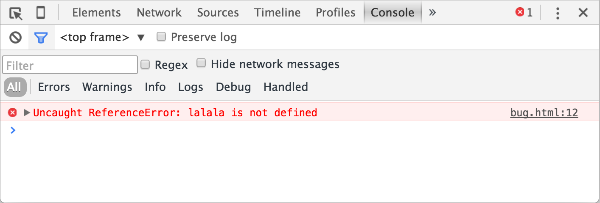

Google Chrome
Откройте страницу bug.html.
В её JavaScript-коде закралась ошибка. Она не видна обычному посетителю, поэтому давайте найдём её при помощи инструментов разработки.
Нажмите F12 или, если вы используете Mac, Cmd+Opt+J.
По умолчанию в инструментах разработчика откроется вкладка Console (консоль).
Она выглядит приблизительно следующим образом:
Точный внешний вид инструментов разработки зависит от используемой версии Chrome. Время от времени некоторые детали изменяются, но в целом внешний вид остаётся примерно похожим на предыдущие версии.
- В консоли мы можем увидеть сообщение об ошибке, отрисованное красным цветом. В нашем случае скрипт содержит неизвестную команду «lalala».
- Справа присутствует ссылка на исходный код
bug.html:12с номером строки кода, в которой эта ошибка и произошла.
Под сообщением об ошибке находится синий символ >. Он обозначает командную строку, в ней
мы можем редактировать и запускать JavaScript-команды. Для их запуска нажмите Enter.
Обычно при нажатии Enter введённая строка кода сразу выполняется.
Чтобы перенести строку, нажмите Shift+Enter. Так можно вводить более длинный JS-код.
Теперь мы явно видим ошибки, для начала этого вполне достаточно. Мы ещё вернёмся к инструментам разработчика позже и более подробно рассмотрим отладку кода в главе Отладка в браузере.